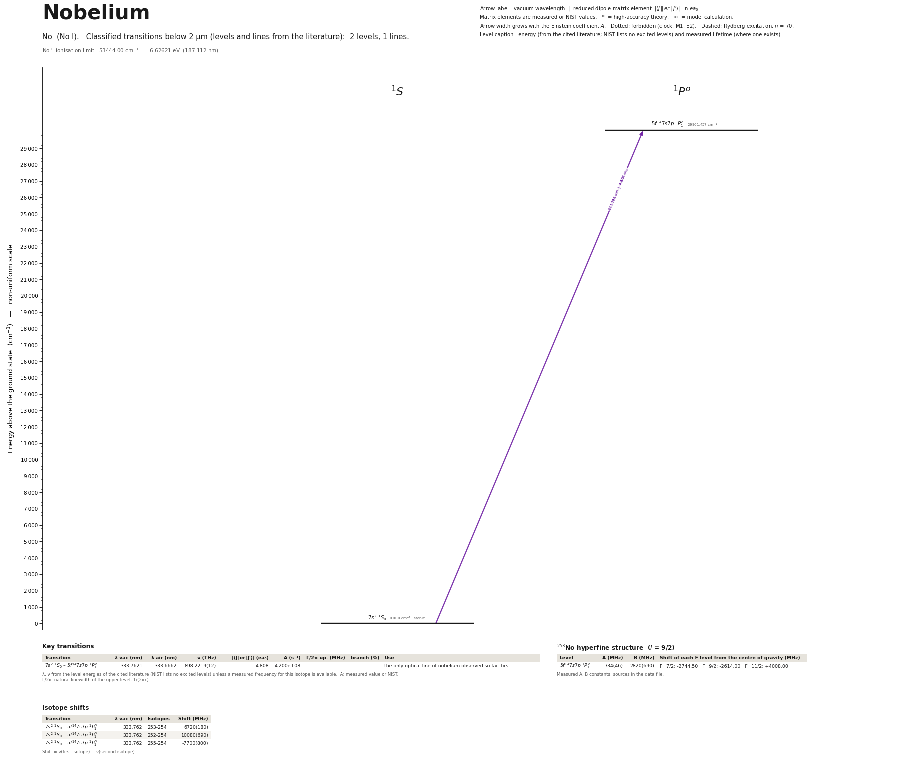

Nobelium energy level diagram
Energy levels and transitions of neutral nobelium (No I): 2 levels and 1 classified lines below 2 µm taken from the cited literature, each line with its vacuum wavelength and frequency and, for 1 of them, the reduced dipole matrix element. The NIST Atomic Spectra Database lists only the ground level and the ionisation limit of nobelium, so the level energies on this page are those of the literature sources named below.
Hover a line or a level to isolate it, click to keep it selected. Scroll to zoom, drag to move.

Download: diagram (PDF) diagram (SVG) transitions (CSV) levels (CSV) source code

Key transitions of nobelium
| Transition | λ vac (nm) | λ air (nm) | ν (THz) | |⟨J‖er‖J′⟩| (ea₀) | A (s⁻¹) | Γ/2π up. (MHz) | branch (%) | Use |
|---|---|---|---|---|---|---|---|---|
| 7s2 1S0 – 5f147s7p 1P°1 | 333.7621 | 333.6662 | 898.2219(12) | 4.808 | 4.200e+08 | – | – | the only optical line of nobelium observed so far: first… |
λ, ν from the level energies of the cited literature (NIST lists no excited levels) unless a measured frequency for this isotope is available. A: measured value or NIST. Γ/2π: natural linewidth of the upper level, 1/(2πτ).
253No hyperfine structure (I = 9/2)
| Level | A (MHz) | B (MHz) | Shift of each F level from the centre of gravity (MHz) |
|---|---|---|---|
| 5f147s7p 1P°1 | 734(46) | 2820(690) | F=7/2: -2744.50 F=9/2: -2614.00 F=11/2: +4008.00 |
Measured A, B constants; sources in the data file.
Isotope shifts
| Transition | λ vac (nm) | Isotopes | Shift (MHz) |
|---|---|---|---|
| 7s2 1S0 – 5f147s7p 1P°1 | 333.762 | 253-254 | 6720(180) |
| 7s2 1S0 – 5f147s7p 1P°1 | 333.762 | 252-254 | 10080(690) |
| 7s2 1S0 – 5f147s7p 1P°1 | 333.762 | 255-254 | -7700(800) |
Shift = ν(first isotope) − ν(second isotope).
Listed No transitions below 2 µm
| Lower level | Upper level | λ vacuum (nm) | λ air (nm) | ν (THz) | Type | |⟨J‖er‖J′⟩| (ea₀) | A (s⁻¹) | Branching (%) | Source of matrix element / A |
|---|---|---|---|---|---|---|---|---|---|
| 7s2 1S0 | 5f147s7p 1P°1 | 333.7621 | 333.6662 | 898.2219 | E1 | 4.808 measured | 4.200e+08 measured | – | Laatiaoui, Lauth, Backe, Block, Ackermann, Cheal, Chhetri, Duellmann, et al., 'Atom-at-a-… |
Reduced dipole matrix elements follow the convention A = ω³|d|²/(3πε₀ħc³(2J′+1)), with J′ the upper level. Tags show where a number comes from: measured, NIST compilation, high-accuracy theory, or a model calculation.
No energy levels
| Level | Energy (cm⁻¹) | J | Parity | Lifetime | gJ | Hyperfine A (MHz) | Hyperfine B (MHz) | Lifetime source | Hyperfine source |
|---|---|---|---|---|---|---|---|---|---|
| 7s2 1S0 | 0.000 | 0 | even | stable | – | – | – | – | – |
| 5f147s7p 1P°1 | 29961.457 | 1 | odd | – | – | 734 | 2820 | – | Raeder, Ackermann, Backe, Beerwerth, Berengut, Block, et al., 'Probing sizes and shapes o… |
No⁺ ionisation limit 53444.00 cm⁻¹ = 6.62621 eV (187.112 nm)
Sources
- Laatiaoui, Lauth, Backe, Block, Ackermann, Cheal, Chhetri, Duellmann, et al., 'Atom-at-a-…
- Laatiaoui, Lauth, Backe, Block, Ackermann, Cheal, Chhetri, Duellmann, et al., 'Atom-at-a-…
- Raeder, Ackermann, Backe, Beerwerth, Berengut, Block, et al., 'Probing sizes and shapes o…
Nobelium exists only as single atoms from heavy-ion fusion (a few 254No ions per second at GSI Darmstadt); everything measured comes from two-step resonance ionization with detection by alpha decay. MEASURED: (1) the line 5f14 7s2 1S0 - 5f14 7s7p 1P1 at 29 961.457 cm^-1 in 254No with its Einstein coefficient (deduced from the saturation curve by a rate-equation fit, not from a decay curve), (2) its isotope shifts for 252, 253, 255No relative to 254No and the hyperfine constants of 253No, (3) the ionization potential 53 444.0(4) cm^-1 from a Rydberg series, (4) one further level at 29 652 (+8/-1) cm^-1, reached only by buffer-gas collisions from 1P1 and located through the convergence limit of two Rydberg series; its label 3D3 is an assignment. All wavenumbers were measured in 65-95 mbar argon and are not corrected for the pressure shift except the ionization potential. CALCULATED (method 'theory', energies only, accuracy a few hundred cm^-1): the eight other low levels in levels_not_in_nist from Dzuba, Safronova & Safronova 2014; their calculated g-factors are under 'g_J_theory' so that they cannot be mistaken for measurements. Isotope shifts are nu(first) - nu(second) in MHz: lighter isotopes lie at higher frequency (field shift dominates). frequency_THz values are derived from printed wavenumbers. Asymmetric uncertainties are stored as unc_plus / unc_minus with 'unc' = the larger side. Nuclear moments of 253No are not purely experimental: they combine the measured A and B w
Atoms with measured data
- Lithium-632 levels, 85 lines
- Lithium-732 levels, 85 lines
- Beryllium-917 levels, 26 lines
- Sodium-2336 levels, 106 lines
- Magnesium-2418 levels, 61 lines
- Magnesium-2518 levels, 61 lines
- Potassium-3934 levels, 84 lines
- Potassium-4034 levels, 84 lines
- Potassium-4134 levels, 84 lines
- Calcium-4035 levels, 61 lines
- Calcium-4335 levels, 61 lines
- Rubidium-8536 levels, 94 lines
- Rubidium-8736 levels, 94 lines
- Strontium-8740 levels, 70 lines
- Strontium-8840 levels, 70 lines
- Caesium-13331 levels, 79 lines
- Barium-13744 levels, 89 lines
- Barium-13844 levels, 89 lines
- Dysprosium-16339 levels, 55 lines
- Dysprosium-16439 levels, 55 lines
- Ytterbium-17118 levels, 26 lines
- Ytterbium-17418 levels, 26 lines